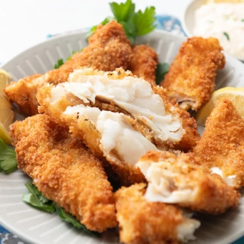

Home
Fish Fillet

Don't let the simplicity of this tasty fried fish recipe fool you: The fillets fry-up perfectly cooked inside, with a beautiful golden crust.
Haddock and cod are two excellent choices for our fried fish recipe, but tilapia, pollock, catfish, bass, trout, or perch will also yield a beautiful meal.
Ready in 30 minutes, this is a perfect choice for a busy weeknight dinner or to serve as a weekend lunch with a salad and a few dipping sauces like
classic tartar, Louisiana rémoulade, or chipotle mayonnaise.
The trick to perfect fried fish lies in the oil and temperature used for cooking it and in the coating used on
the fish. Use an oil with a high smoking point, such as canola, corn, safflower, peanut, avocado, or grapeseed oil.
Avoid olive oil and butter since they'll burn at the high temperatures required for frying. Don't skip the flour
coating since it provides a delicious crispy texture, protects the fish from soaking up too much oil, and also keeps
the fillet in one piece. For best results, use a heavy-bottomed pan, as it distributes the heat evenly.
Since fish happens to be a more tender protein, if your fillets are particularly thin, keep a close eye on the
skillet when frying them. If frying in batches, add more oil as needed and bring up to temperature before adding
more fillets. Before starting, lightly pat the fish fillets dry with a paper towel.
Ingredients
- 1/2 cup all-purpose flour
- 1/2 teaspoon fine salt, or to taste
- 1/4 teaspoon freshly ground black pepper, or to taste
- 1/4 teaspoon paprika
- 1 pound fish fillets, such as haddock, tilapia, or cod
- Vegetable oil, for frying
- Lemon wedges, tartar sauce, or rémoulade, optional
Steps
- Gather the ingredients.
- In a shallow bowl or deep plate, combine the flour, salt, pepper, and paprika. Mix well.
- Dip 1 or 2 fish fillets into the flour mixture. Make sure they are completely coated on all sides. Gently shake off any excess. Repeat with the remaining fillets.
- Pour about 1/2-inch of oil into a large skillet and heat over medium-high heat until the oil shimmers.
- Working in batches, fry the fillets until golden brown and crisp, about 6 minutes. Turn with tongs and continue cooking until golden brown, crisp, and cooked through, about 6 minutes more. Transfer to a cooling rack to drain.
- Serve hot with lemon wedges, tartar sauce, or homemade rémoulade sauce, if desired. Enjoy.